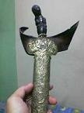
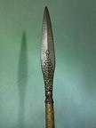
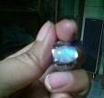
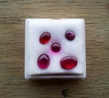

|
Halaman ini berisi ringkasan dan editan tanya jawab Penulis dengan pembaca tentang kebatinan dan kegaiban.-Mudah mudahan berguna untuk menambah pengetahuan dan hiburan. A-:
Pesan saya yg tadi masuk tidak ya romo-?,, soalnya tadi sempat error.
J-:
-
Ini foto kedua orangtua saya, usia ayah-76-mamah-70.-bagaimana menurut pandangan batin romo-?-
apakah Kuasa Tuhan dan Roh KudusNya sdh bersemayan dlm diri kedua ortu sy ini romo-(menurut saya sih
hanya ada di bapak)
karena dulu bapak pernah mati suri, dan mengikuti perjalanan Tuhan Yesus Kristus dari bukit golgota
sampai Ia disalibkan. bukan seperti menonton tv, tapi kesaksian ayah..-ia ikut serta di
dalamnya.-hanya saja ia mendengar percakapan mereka semua dalam bhs batak, apakah ini yg dimaksud dgn
bahasa Roh....-? semenjak itulah ayah sy semakin religius dan tdk tergoyahkan Imannya kpd Tuhan.
Kelihatannya ibu anda sakit fisik biasa, tidak ada hubungannya dgn gaib.
Roh Kudus juga ada padanya. Sambil berdoa tumpangkan saja tangan anda di bagian sakitnya. Kelihatannya bapak anda ada bersemayam sejenis sukma manusia di kepalanya kasusnya sama seperti anda yg di badan, di bapak anda posisinya di kepala, kekuatannya rendah Sukma tsb akan banyak memberikan gambaran fiktif-/-halusinasi-/-ilusi Coba belajar dideteksi keberadaan sukma tsb Sesudah itu mintakan kpd Tuhan untuk menyingkirkan sukma tsb- Atau bisa juga anda minta kpd khodam2-anda untuk mengunci dan menyingkirkannya Sebaiknya dilakukan ketika bapak anda sedang tidur. terima kasih A-: -
Romo, tadi saya sempat menumpangkan tangan saya ke kaki kiri mamah saya..-Sambil memohon kpd Kuasa
Bapa, Tuhan Yesus dan Roh Kudus untuk menyembuhkannya.
Saya juga barusan sdh berdoa memohon kpd Bapa, Tuhan Yesus dan Roh Kudus..-Sewaktu menutup mata..-saya bersugesti Bapa memberikan Kuasanya dari atas, begitupun dgn Roh Kudus, dan tangan saya arahkan ke kepala bapak saya..(dalam roh) -saya katakan-:"-Dalam nama Tuhan Yesus pergi-!!-" Habis itu di hati saya langsung bernyanyi-: Bapak Terimakasih.. Apakah menurut penglihatan Romo, sukma itu sdh langsung pergi-??- Romo, sukma itu berjenis laki2-ya, dan ada-1-?? -Benar tidak Romo...- Oh iya, sebenarnya bapak saya..-Waktu itu memang sdh sempat mau dikubur..-Karena sdh dimasukkan di peti mati, keluarga pun sdh kumpul semua-(mati lebih dari-4-jam, sdh tdk ada nafas kehidupannya). Saya berdoa kpd Tuhan, kalo memang itu wahyu dariNYA..-Amin. Tapi kalo memang ada-'sukma yg menempel di kepala ayah saya, tolong dibersihkan dgn kuasa Roh Kudus. Menurut penglihatan batin Romo, bagaimana skrg keadaan ayah saya itu..- Apakah sukma itu masih ada atau sdh pergi-?? Mohon petunjuk Romo. Terima kasih.
Kelihatannya sukma itu sudah tidak ada.-Sosoknya bapak2 berjubah.
Mungkin bapak anda itu mengalami ketempatan mahluk halus yg sampai menyebabkannya mati suri.-Saya sudah menuliskan tentang itu dalam tulisan saya yg berjudul Pengaruh Gaib Thd Manusia . Berarti anda sudah yakin dgn kuasa Tuhan nih ya-...-? Berarti besok bisa jadi pendeta penyembuh dan pengusir setan, he he he.... Sebaiknya itu ditularkan kpd semua orang yg sehaluan dgn anda, spy kualitas kepercayaannya juga meningkat, yg nantinya akan mjd bentuk kesaksian bhw Allah benar Ada dan KuasaNya Nyata. terima kasih A-: -
Puji Tuhan..-Ia romo tadi malam pas saya berdoa kpd Bapa..-Saya diperlihatkan ada sosok
bapak2-berjubah..yg saya lihat jubah putih berlengan panjang.
Maaf-, Romo apakah ini berarti dlm hal kerohanian saya sdh berkembang-? -bagaimana menurut Romo-?- Terima kasih
Soal kerohanian anda sendiri sih anda yg lebih tahu daripada saya.
Asal jangan sampai nantinya dgn kemampuan anda itu anda bermegah diri, merasa lebih beriman daripada orang lain, atau menggunakannya untuk kepentingan2-duniawi yg tidak patut. A-: -
Oh maaf Romo, saya tidak melihat..-Terusan tulisan Romo. Hehehe..-Saya selalu meminta kpd Allah agar Ia
berkenan selalu menguatkan iman saya, agar setiap saat, menit, jam, detik.. Kuasa Roh Kudus semakin
membesar-/-bergelora dlm diri saya.
A-:
-
Ia Romo..-Saya yakin dan bertambah YAKIN skrg.-
Apalagi sy jg mendapat bimbingan-/-petunjuk arahan dari Romo. Semoga dgn Kuasa Tuhan beserta Roh KudusNya yg sdh ada dlm diri saya, dpt selalu saya gunakan di jalan yg dikehendaki Bapa di Surga. Agar Kuasa Bapa dan nama Putranya yg tunggal Tuhan Yesus Kristus semakin dipermuliakan.-Amin Sekiranya Romo pun terus membimbing saya.- Terimakasih
Salam sejahtera.
Romo sebelum saya tidur, baru sj sy berdoa kpd Allah.-Di dlm penglihatan-/-roh saya ketika sy meminta Kuasa Tuhan agar bersemayam dlm tubuhku-/-Terang CahayaNya.-'-saya melihat dlm pandangn roh saya ada pedang putih panjang yg ditusukkan-/ dimasukkan pas ke tengah2-dada saya.-Dalam Roh juga saya melihat diri saya diterangi oleh cahaya putih terang dari atas.-Saya jg melihat sosok Bapa, serupa dgn gambaran Yesus, dgn penuh wibawa dan Kuasa.-Begitu besar kuasanya yg roh saya rasakan. Pertanyaan saya-:pedang putih panjang yg masuk ke dada saya itu apa artinya Romo-???
Terima kasih.
J-: -
Pedang panjang itu adalah kekuatan yg akan membukakan pengertian anda akan Allah.
A-:
-
Itu juga sudah membuka cakra2-di dada anda. terima kasih
oh iya Romo, dlm Roh saya melihat-/-mendapat gambaran bhw pedang yg ada di dalam dada sy
ini..-memenggal kepala2-roh2-jahat..
Maksudnya apakah nanti KUASA itu bekerja dlm hal seperti itu Romo??
Maknanya tidak persis spt itu, tapi gambarannya memang begitu.
Arti gambarannya, pedang itu masuk ke dalam hati anda, membukakan pengertian anda tentang Tuhan, dan Kuasa dari pedang itu lebih daripada kuasa roh2-lain di bumi ini. Terkandung makna di dalamnya bhw itu adalah Kuasa Tuhan yg sudah diberikan kpd anda, shg anda bisa menggunakannya sewaktu2 tanpa terlebih dulu harus berdoa kpd Tuhan meminta ijin.-Hanya saja dalam sehari2nya anda jangan bermegah diri, jangan menganggap itu sbg kemampuan dan kuasa milik pribadi anda sendiri, seolah2-itu sama spt kemampuan keilmuan, jangan menggunakannya untuk kepentingan duniawi yg tidak patut.- Dalam sehari2nya anda harus tetap selaras dgn Tuhan, hidup di dalam Tuhan dan Firman2Nya, jangan sampai terpisah berjalan sendiri.-Jangan menganggap itu adalah kehebatan anda sendiri, jangan bermegah diri.-Jangan sampai apa yg sudah anda terima itu nantinya diambilNya kembali.- Jika seseorang setia dalam perkara yg kecil, kepadanya akan diserahkan kepercayaan dalam perkara yg lebih besar lagi.-Tetapi semakin banyak seseorang diberi, kepadanya akan semakin banyak dituntut.- Yesus bisa dijadikan teladan.-Sekalipun diriNya berkuasa, tetapi Ia tetap menyatukan diriNya, selalu menjaga kesatuanNya dgn Bapa dan Roh Kudus, tidak bermegah diri, tidak memisahkan diri dan berdiri sendiri sbg Pribadi yg berkuasa.- Sebenarnya Kuasa itu diberikan juga kpd Anak2-Allah yg lain, hanya saja tidak semuanya mau membuka hatinya kpd Allah, lebih banyak yg melakukan pencitraan Tuhan. A-: -
Romo, jika saya mendapat penglihatan kalau tubuh-/-diri saya dibelah..-Menjadi-2-oleh pedang itu.-
Ketika sdh terbelah menjadi-2, tubuh-/-diri saya sebelah kanan ditaruh di api... Tubuh sebelah kiri perutnya lalu dtusuk dan dipenggal kepalanya oleh pedang tersebut. Dan Tubuh yg sebelah kanan-/ diri saya.., yg tadinya ditaruh di api-(bukan api neraka)-.... kemudian tubuh saya tersebut diangkat kembali dari api tersebut. (Gambaran api disini..-bukan api neraka yg besar..tapi seperti api2-yg ada ketika seorang nabi jaman dulu ingin mempersembahkan bakaran kpd Tuhan-) Apakah makna tersebut Romo-?? Saya melihatnya-/-terasa di batin saya sampai-2x. dibelahnya dari ujung kepala saya..- Apakah penglihatan-/-gambaran yg saya dapatkan ini memang terjadi atau hanya ilusi saya-??? Mohon dijelaskan romo. Terimakasih A-: -
Selamat siang Romo, maaf ingin bertanya kembali.
Tadi pagi saya mimpi melihat mamah sedih, wajahnya tertunduk.. Sedangkan di satu sisi saya sedang asik bersenang2-/-dansa dgn teman perempuan saya.- Melihat mamah yg sedih akhirnya saya mendatangi dia dan bertanya kpdnya, mamah kenapa sedih?- (dgn sikap-/-suara tegas)-tapi mamah tdk menjawab. Di satu sisi teman perempuan sy terlihat sedikit kaget, mungkin melihat-/-mendengar suara saya yg lantang kpd mamah.-Apakah maksud mimpi tersebut Romo??? Romo sy kirimkan foto terbaru saya, bagaimana menurut Romo akan diri saya dan semua saudara gaib yg mengikut saya-??? Karena sy merasakan adem ayem aja dgn saudara ghaib ataupun sdlur papat.-Tidak seperti kemarin-(aktif)-apa mereka lagi bersifat pasiff ya romo-???-
Kalau gambarannya yg satu sedih yg satu gembira, mungkin anda asyik dgn yg baru, lupa sama yg lama,
atau ada yg merasa tidak anda perhatikan.
thanks A-: -
Met pagi Romo..
Benar apa yg dikatakan Romo, tadi malam saya sampai mimpi basah.- Saya mendapatkan-2-buah nama yaitu-:Rantih, dan Cempaka-(apa itu nama mereka-??-) Yg pertama..-Wanitanya masih muda, yg kedua sdh seperti ibu ibu. J-: -
Kelihatannya nantinya teman2-kunti akan ada lagi yg datang.
A-: -
Haduhh..-Romo.-Apa bisa teman2-gaib yg datang itu kita yg pilih dalam hal mau mengikuti-??-
Kalo kebanyakan kunti, nanti saya bisa repot nih romo, apalagi pas saya baca artikel Romo tentang DEDEMIT, bahwasanya..-Kunti itu jg pencemburu.. Oh iya Romo, sdh-3-hari ini setelah melakukan laku spiritual kpd Allah, ubun2-sy selalu berdenyut romo, kadang pelan halus.. kadang denyutnya terasa sekali sampai seperti bergerak2-/ bergeser tempatnya..-Tapi tetap di atas kepala.-Kalo pelan n kencang itu tandanya apa ya romo-??- Apakah ini akan sy rasakan setiap hari-?? J-: -
Pencemburu itu adalah karena mereka merasa menyatu dgn orangnya sbg khodam.
Tidak perlu berpikiran negatif tentang kunti. Mereka sama saja dgn mahluk halus yg lain. Di belakang rumah saya ada lebih dari-1000-kunti, tapi tidak masalah. Selama tujuannya baik, untuk belajar dan datang kpd Allah, tidak perlu memilih2, anda hanya perlu menyelaraskan mereka kpd Allah shg kemudian mereka mjd pribadi yg semakin baik. Sekalipun nantinya ada yg tetap tidak baik, anda sudah diberi kuasa untuk menghapuskan mereka. Rasa di kepala anda bisa jadi adalah reaksi dari Roh Kudus yg sudah ada pada diri anda, bisa juga adalah gerakan-/ bergetarnya cakra2-di kepala anda. Nantinya anda akan bisa membedakan sendiri bhw masing2-gerakan-/-getaran mempunyai arti /-maksud sendiri2. A-: -
Romo, baru saja saya olah rasa dgn sedulur papat-/-kakang kawah..
Ia mengatakan bahwa wanita yg bersenang2-dgnku adalah kunti-1-(nama yg sy dapatkan adalah RATIH)-Yg di dalam mimpi..-aku bisa sampai terlena bersamanya. Sedangkan yg sedih itu adalah kunti ke-2-/-Cempaka-( yg lebih tua-/-spt tante tante-)-yg di dalam mimpi..- kata kakang kawah..-Kunti ke-2-adalah kakak dari kunti-1. Menurut Romo apa bisa seperti itu ya-??-Sesama kunti kok cemburu..-Hehehe.-Bener gak sih romo, kunti itu bersaudara...-? Oh iya Romo, apakah semua saudara gaib-/-khodam pendamping masih ikut bersama aku-?? Mengenai Roh Kudus, ia berkata jika di kepalaku sdg tdk berdenyut, berarti Roh Kudus itu sdg mengajari gaib2-ku untuk mengenal Tuhan, tapi jika tanda denyut itu sdh ada, berarti Roh Kudus sdg memfokuskan dirinya kepada saya.-Apa benar seperti itu ya Romo-???- Katanya Iman saya masih naik turun. Terimakasih
Kadang di dalam penglihatan batin saya..-burung merpati putih bersih yg ada di atas kepala saya kadang
ia terbang melayang di atas kepala saya, kadang ia bergerak-/-bergeser dgn kakinya menapak di kepala
saya, kadang saya melihat ia melayang kembali dgn disinari cahaya putih terang dari atas menyinari
burung tersebut, terkadang lagi burung itu berubah menjadi seperti jubah putih bersinar
terang-/-terkadang dalam bentuk orang, tapi tidak kelihatan wajahnya, karena diselubungi oleh cahaya
putih terang menyilaukan.
Begitulah yg saya lihat romo dlm batin saya, ketika saya menutup mata..-/-terkadang jika saya dalam keadaan santai duduk2..-Sambil menghayati sosok Bapa-/ Tuhan Yesus kristus. J-: -
Sesuai sifat Roh Tuhan, Roh Kudus itu hidup, dan bisa menciptakan kehidupan.
Yg di kepala anda juga bisa mewujudkan sosok2-gaib. A-: -
Ia Romo, semoga jikalau Tuhan berkenan, kita nanti bisa bertemu.
Terimaksih- A-: -
Romo, apakah penglihatan-/-kuasa Roh bisa terjadi dimana saja.. termasuk penglihatan yg kita dapatkan
maaf-(di kamar mandi-)... yg dimana, walaupun kita mandi hati kita tetap terfokus kepadanya..-???-
Sewaktu tadi sy mau mandi, sy berdoa kpd Tuhan, agar BAPA berkenan memberkati air yg ada di bak mandi, agar air itu berkuasa untuk memberikan penyegaran di hati dan pikiran, air itu berkuasa untuk membuang-/-membersihkan segala yg kotor-/-negatif dalam tubuh ini dari ujung rambut sampai kaki.- Sewaktu sy berdoa, dlm penglihatan roh ada cahaya putih dari atas menyinari air yg di bak mandi juga diri saya, seketika ada roh yg diambil-/-ditarik dari atas kepala saya..-(Roh yg diambil tdk terang-/-roh itu tidak memancarkan cahaya)-seketika saya merasa di dalam diri saya ada sesuatu yg besar, berkuasa dan bersinar..-Yg saya lihat itu adalah-...-wajah Yesus. Romo, begitu banyaknya penglihatan2-roh yg diperlihatkan kpd saya..-Apa yg terjadi pada diri saya ini..-Kalau menurut-/-penglihatan Romo bagaimana-?? Terimakasih A-: -
Romo, begitu sering dan banyaknya saya mendapatkan penglihatan Roh-(apalagi jika sdh saat teduh memuji
berdoa dan membaca firmanNya)
Tadi sewaktu sy saat teduh..-saya melihat di atas kepala burung merpati yg ada di kepalaku ini..... mempunyai Mahkota-(dlm penglihatan berwarna kuning)-seketika saya lihat lagi.. Mahkota itu menjadi besar dan skrg ada di atas kepala saya..-Ada cahaya putih bersinar terang yg keluar memancar dari diri saya, tapi saya juga mendapatkan sorotan sinar cahaya terang dari Atas. Terakhir BAPA menaruh tanganNYA di atas kepala saya. Banyak yg disampaikan Bapa kpd saya, tapi saya tdk terlalu mengingatnya lagi. Yg masih saya ingat-.... Biarlah Firman yg Hidup ini selalu tinggal di dalam dirimu, hati dan pikiranmu..-Imani, percayai setiap penglihatan2-yg diberikan kepadamu.-Percayalah bahwa diriKU selalu menyertai kamu.-Jangan gentar kpd kuasa2-dunia.- Sebab Allah itu esa, Allah itu besar, pencipta langit dan bumi, kamu harus percaya kpd Yesus Kristus, bahwa DIA memang benar adalah putraKU yang Tunggal, yang telah Mati di kayu salib, mencurahkan darahNya yg Kudus untuk menebus orang2-berdosa yg mau ditebus dan mau mengakuiNYA. Romo...-Inilah yg saya dapatkan-/-kata2 NYA yg msh saya ingat. Allah itu Tri Tunggal..-Allah di dalam Yesus Kristus, dan Kuasa Roh Kudus ada di dalam NYA. Mohon sekiranya Romo juga berkenan memberikan wejangannya kpd saya. Agar saya semakin bertumbuh dalam iman dan pengharapan.- Terimakasih J-: -
Apa yg terjadi pada diri anda mungkin sama dgn saat pertama murid2-Yesus kepenuhan Roh Kudus.
Itu juga mjd bukti bhw ajaran2-Yesus benar, yg akan mengantarkan manusia kpd Tuhan yang benar, dan tidak akan ada manusia yg dapat datang kpd Bapa kalau tidak melalui Dia. Jalankanlah semua ajaran dan perintahNya, dan selalu bertekun di dalam doa. Kalau ada gambaran atau firman yg anda kurang mengerti, sebaiknya anda tanyakan langsung kpd Tuhan, ditanyakan langsung kpd pemberinya. Dengan demikian tugas saya thd anda sudah selesai Karena sama spt Yesus, saya juga hanya menunjukkan saja jalan yg benar, yg sesudahnya tinggal orangnya saja bertekun kpd Tuhan. Anda juga dapat berbakti kpd Tuhan dengan menyampaikan ajaran yg benar tentang Tuhan, membawa domba2-Tuhan kembali kpd Tuhan.-Bukan menyebarkan agama, bukan pada bentuk agama atau ajaran2-agama, apalagi fanatisme agama, tetapi kepada Tuhan, kpd pengenalan akan Tuhan yg benar.- Kita tidak menyebarkan agama, terserah orang mau beragama apa, karena apapun agamanya, sama dengan anda ataupun tidak, dengan beragama saja belum tentu mengantarkan orang menjadi pribadi yang mulia di hadapan Allah.-Karena itu kita ingin supaya semua orang mengenal Tuhannya dgn benar, dan supaya ibadahnya benar sampai kpd Tuhan yg benar, spy manusia tidak menghabiskan waktu untuk perbuatan yg sia sia. Mulai sekarang kita bukan lagi guru dan murid, tetapi Anak Anak Allah yg berbakti kpd Allah, menjadi penjala manusia. Banyak pembaca situs saya yg sudah menjadi lebih mengerti tentang Tuhan.-Sebagian juga ada yg diberikan Roh Kudus, walaupun statusnya tidak semuanya sama dgn baptisan sbg Anak Allah.- Yesus juga pernah menemui mereka.-Selebihnya tinggal mereka saja, apakah mau datang kpd Tuhan, karena tidak semua firman Allah jatuh di tanah yg subur. GBU. A-: -
Iya Romo terimakasih banyak atas bimbingan, nasihat, penerangan yg Romo berikan kepada saya.
semoga saya bisa selalu selaras dgn kehendak2-Bapa di surga, dan selalu berjalan di dalam terang cahaya
Tuhan.
Mari kita saling mendoakan ya Romo.
Terimakasih kpd Bapa di surga, karena telah memberi saya kesempatan untuk bisa berkomunikasi dgn Romo,
walaupun saat ini hanya baru sekedar lewat email.
GBU too Romo.
J-: -
Diberkatilah yg datang dalam nama Tuhan.
A-: -
AMIN
A-: -
Romo tadi pas berdoa kpd Bapa saya bersugesti berada di sorga juga..-saya mencoba ingin melihat keadaan
sorga seperti apa-?? Cuman saya hanya sampai di gerbangnya yg tinggi sekali.-Seperti ada malaikat
bercahaya di kanan dan kiri yg menjaga pintu gerbang itu-..-Kelihatan juga sih ke dalamnya....-Taman yg
luas sekali..-sepertinya di ujung ada sebuah singgasana kerajaan yg besar.-Lalu ada suara yg bilang
lihatlah ke dalam dan saya melihat sosok Yesus bermahkota yg duduk di sana.-Haleluya.
Puji Tuhan.
Amin
A-: -
Romo saya jadi kepikiran terus..-Benar-/-tidaknya..? -Karena pertanyaan2-saya belum Romo
jawab..
Maaf Romo.-Hanya ingin kepastian saja..-karena saya inikan masih baru romo, Sedangkan Romo sdh lama selaras dengan Tuhan. Tentu saja saya yg baru ini banyak mendapatkan godaan-/ pencobaan yg datang.- Tolong Romo.- A-: -
Met pagi Romo..-
Di dalam saya menunggu jawaban dari pertanyaan2-saya kpd romo..-jam-4-subuh saya terbangun, di batin saya, saya mnyebut nama Romo, lalu di dalam penglihatan saya melihat Romo sedang duduk bersemedi. Romo berpesan kpd saya-: "Percayailah setiap penglihatan yg terjadi pada dirimu..-Percayailah setiap kata2-yg datangnya dari batin kamu, yg datangnya dari Roh kudus atau pun saudara2-mu. Kenapa kamu masih menanyakan jawabannya atau hal yg telah kamu ketahui dari rasa batinmu.-Percayailah itu semua"- Maaf Romo. J-: -
Aduh maaf deh ya saya sampai bingung karena pertanyaan anda banyak sekali, emailnya bertubi2-sampai
saya bingung mau menjawab yg mana.-Tapi kalau memang diperlukan coba saja sekali2 bermeditasi fokuskan
batin ingin ketemu dgn sukma saya, nantinya sedulur papat saya akan datang menemui anda.
thanks A-: -
Oh kalo begitu saya yg seharusnya minta maaf sama Romo karena sudah merepotkan.
J-:
-
Oh ya Romo, tolong dicek..-apakah di diri saya ada kedatangan saudara baru lagi-?-(karena pundak saya merasa rentek-/-pegal, badan sedikit berasa dingin). Mohon maaf dan terimakasih.
Kelihatannya di belakang anda datang sesosok jin putih laki2 ksatria,
5-KRK.-Tingginya-4-meter.-Kelihatannya itu yg mbahurekso di daerah anda.-
Katakan saja kepadanya anda sudah tahu kedatangannya, selanjutnya disuruh mundur saja sedikit. thanks A-: -
Lengkap sudah romo..-11-pendamping jadinya-(tidak termasuk-2 kunti)
Ia romo..siap laksanakan, sy juga mendptkan nama-: SURYA Pranata Diningrat..- Apakah benar itu namanya-??? Apa yg membuatnya tertarik ingin ikut saya, dan apa Tuah nya-??- Oh iya Romo, kalo mendapatkan gambaran ada-2-merpati di atas kepala saya..-Itu artinya apa yah-?? Apakah Romo melihatnya juga....
Hari ini maaf perut saya mules terus..-saya ke belakang terus romo..- buang besar dan
kecil-(bolak balik)-apakah karena gaib atau saya masuk angin romo-??
Tadi waktu tidur, saya merasa roh sy seperti medhar-..-apa itu benar terjadi ya romo..-? -
Waktu medhar saya seperti ke tempat Bapa..-dan anehnya saya seperti melihat Yesus juga duduk di sebelah saya..-pas saya lagi tidur.-.
Romo tolong dicek apakah saudara2-Gaib saya masih lengkap semua, ada-11-(4-khodam pusaka),
dan-(7-khodam pendamping-= termasuk yg baru datang yg-5-KRK itu)
maaf Romo sinyal BB lagi error se ASIA mulai dari jam-11-tadi.
pikiran lagi butek romo karena perut lagi mules..-jadi gak konsen untuk olah rasa.
dari foto saya..-bagaimana kondisi saya saat ini..- scr keseluruhan romo-?
Terimakasih.
Iya nama2nya sudah benar.
Nantinya yg sungguh2-mjd khodam pendamping anda tidak semuanya itu. Soal mulesnya kelihatannya tidak berhubungan dgn gaib. Sebaiknya atas semua gambaran2-yg anda dapatkan anda berusaha sendiri mencaritahu artinya, paling baik mencaritahu siapa yg memberikan gambaran itu kemudian ditanyakan artinya kepadanya, karena saya sendiri tidak selalu bisa menerjemahkan artinya. Sebaiknya jangan hanya berputar2-pada fenomena2-sesaat saja.- Ada banyak pengetahuan gaib berdimensi tinggi tentang ketuhanan ataupun tentang kegaiban yg lain.-Kalau anda mau mengasah spiritualitas anda, anda juga akan bisa mengetahuinya.-Nantinya itu akan mjd pengalaman perjalanan spiritualitas anda. A-: -
siap laksanakan Romo.
terimakasih.
maaf romo saya lupa nih..-(masalah kegaiban lainnya)
Apakah Romo mempercayai adanya sosok alien-???
karena saya pernah melihatnya sewaktu saya olah spiritual.. niat saya tadinya tidak kesitu..-tapi
saya kaget sewaktu tiba2 dalam pandangan mata terpejam..-saya melihat-1-sosok mirip alien yg
menghampiri saya..-bentuknya seperti manusia..-kulit badannya berwarna abu2..-dgn bola mata hitam yg
besar..-kepala botak tanpa rambut..-tidak mempunyai hidung seperti manusia.
awalnya ia datang-(di bukit kecil)..-dan berucap..- di batin saya sepeti ini
kata2nya...-cahaya-/-gelombang apa ini.. sewaktu ia mendekat ia seperti tidak bisa masuk-/-seperti
terhalangi..-lalu ia memanggil beberapa teman2nya yg serupa.. mereka pun datang..-badan mereka tinggi
kurus.-merasa yg lain juga tidak bisa masuk..-mereka lalu pergi..-tetapi mata saya sepertinya
mengikuti langkah kaki mereka.
wow..-saya sangat takjub..-dari atas bukit saya lihat sebuah kota besar yg megah
sekali..-modern..-dengan ada satu pilarnya yg menjulang tinggi.-cahaya ada dimana2..-(-tapi bukan
cahaya matahari-).-arsitektur kotanya sangat bagus..-sy lihat ada beberapa piring terbangnya.-karena
takut..-lalu saya hentikan semedi saya.-(saya lupa awalnya saya mau melihat apa, tapi yg terlihat
malah yg ini Romo.-)
Yang kedua.-saya juga entah itu benar-/-apa namanya karena sebentar saja..-kejadiannya.....
sewaktu saya memanaskan motor..-ingin berangkat ke kantor.. pikiran-/-batin saya sempat memikirkan
SIDHARTA GAUTAMA... saat saya..-melamun, tiba2-saya didatangi DIA..-beliau tiba2 sdh ada di atas
saya-/-dalam pandangan batin saya.-wow besar sekali ya romo..-penuh wibawa dan dari tubuhnya
memancarkan cahaya juga.-tangan kiri..-diletakkan di paha kirinya..-(duduk semedi)-tangan kanannya
terangkat pas di tengah2-dadanya.-
yah...-hampir samalah kaya tayangan di film kera sakti.-tapi kalo gak salah di tangan kanannya dia
memakai gelang deh.. seperti biji2-tasbeh.-dia bertanya kepada saya ada apa memanggil saya..-saya
kaget romo..-dan menjawab-:oh tidak ada apa apa-(saya lupa memanggil dia eyang-/-romo saat itu-)..
hanya ingin tahu saja apa benar benar ada..
Beliau hanya tersenyum...-lalu beliau mengarahkan tangan kanannya ke saya, dan
berkata-"-selaraskan--lah dirimu selalu dengan MAHA PENCIPTA JAGAT RAYA....-sesudah ia berkata
seperti itu..-beliau lalu menghilang.
dan tadi beberapa jam yg lalu..- sewaktu membaca artikel romo..-tentang jin..-saya sempat
melihat entah dimana..-saya melihat ada-1-sosok tinggi bertanduk dua, mukanya kerbau.. badannya besar
hitam...-karena ngeri nanti kenapa napa sayanya..-saya tidak mau ada interaksi dengannya..-saya
langsung membuka mata.
oh iya Romo..-sakitnya dah berhenti.-yang sempat saya rasakan tadi., waktu jalan kok..-sepertinya
badan saya ini besar, tinggi, dan gagah..-seperti ada energi yang kuat di dalam diri
saya..(hanya-5-menit)
sekarang sih sdh normal kembali Romo.
Terimakasih-
Romo mengenai pertanyaan saya yg tadi tolong dikoscek kebenarannya-??-
1-pertanyaan lagi..-Apakah menurut Romo, Alien itu benar benar ada atau hanya cerita karangan-?? Romo mohon.-Petunjuknya..-Dari semua pertanyaan saya tadi..-Sudah benarkah-/-melenceng...-??-(gambaran/-komunikasi/ olah batin laku spiritual-)- Agar saya tahu memperbaikinya dgn segera, jika memang ada kesalahan. Tolong Romo.- Terimakasih
Soal alien, saya pernah ngobrol dlm komen pembaca di tulisan berjudul -
Dewa dan
Ramalan
.
Soal alien juga implisit saya ungkapkan dalam tulisan saya berjudul Olah Spiritual dan Kebatinan . A-: -
di artikel Romo yg berjudul olah spiritual dan kebatinan romo katakan-:
"-
...-Di luar galaksi Bima Sakti juga ada kehidupan lain.-Tetapi mereka tidak memiliki roh dan tidak
hidup dengan perasaan seperti manusia di bumi.-Mereka tidak hidup dengan nafsu kekuasaan, ketamakan,
kemalasan, kesombongan, dsb.-Mereka menjalani kehidupan dengan melakukan yang benar menurut pikiran
mereka.-Mereka hidup dengan insting, naluri dan pikiran, tidak dengan perasaan, sehingga hidupnya
lebih rasional dan bisa membangun kehidupan teknologi yang lebih maju dibandingkan kehidupan
teknologi manusia di bumi.
""-berarti apa yg saya lihat..-ada benar adanya...
iya romo di hati saya, malah saya mau memulangkan keris naga kuning kpd pak D saya..-untungnya
khdamnya pun sdh mengerti.
terimakasih Romo sdh menguatkan kepercayaan diri saya dan mengingatkan saya kembali untuk tetap fokus
kpd Tuhan.
Terimakasih romo ku.
A-: -
Badan saya tadi terasa dingin sekali, tapi tangan saya hangat. Begitupun kening dan leher saya..
Skrg sdh mendingan berkurang tapi masih ada terasa dingin dan hangatnya. Apakah ini proses penyelarasan eyang Surya di dalam tubuh saya Romo-?? A-: -
Ke-3-eyang itu sedang belajar ketuhanan di tempat lain yg lebih tinggi, kapan2-mereka akan datang ke
tempat anda kalau pelajarannya sudah selesai
Khodam benda2-anda tetap berdiam di dalam bendanya masing2, tapi mereka tetap menjaga kontak batin dgn anda. Yg lainnya berada di belakang anda. Sebaiknya anda berfokus kpd Tuhan, karuniaNya lebih daripada tuah khodam2-anda justru khodam2-anda datang mengikut karena menganggap anda lebih tinggi daripada mereka jangan malah anda bergantung kpd mereka. Kekuatan mereka masih terlalu rendah nantinya masih akan datang yg kekuatannya lebih tinggi lagi A-: -
salam sejahtera..
Romo, ketika saya diingatkan romo untuk fokus kepada Tuhan.. saya langsung berdoa, berkomunikasi
denganNya-(membaca alkitab, bernyanyi lagu rohani, dan berdoa-..-mendengarkan sabdaNya yg Bapa
berikan kpd saya-)
Di dalam hati sy berdoa, memejamkan mata..-sy berdoa dgn roh saya..-tanpa memikirkan
pencitraan..-
di dalam doa saya-/ komunikasi saya.. Bapa memberikan-: --Tongkat panjang kuning emas yg di atasnya-/-puncaknya adalah lambang salib-(Bapa bilang tongkat ini untuk selalu menopang saya, dan menguatkan iman saya kepadaNYA.-iman saya kpd Tuhan Yesus, dan iman saya terhadap kuasa Roh kudusNYA-)
Jubah Putih bersih, jangan takut dengan segala kuasa dunia ini, karena jubah ini akan selalu
melindungimu dari kuasa2 dunia ini yg ingin menghimpitmu..
yg saya rasakan skrg di pinggang saya agak pegal romo...-dan badan saya agak terasa dingin
sedikit..-sewaktu saya menyelaraskan diri dengan hadirat Bapa...-badan saya bergetar, ubun2-pun
berdenyut.
Bapa pun berkenan memberikan hikmahnya kepada saya, karena memang saya meminta kepadaNYA
Terimakasih Romo ku.-Tuhan memberkati.
A-: -
Kelihatannya saya sudah salah ya romo..-malu jadinya..
maaf ya romo..-sy tahu, sy hrs masih banyak belajar lagi.-harus dan harus.
Friday, July-5, 2013
A-:
-
Maaf romo di sini saya lampirkan gambaran berkat yg saya terima..-sebuah tongkat salib berwarna
kuning emas dan jubah putih..-yg dimana sewaktu kemarin malam saya tidur..-tongkat dan jubah itu
menyatu seperti ini..-menurut penglihatan Romo apakah sdh benar yg saya alami ini..??-sy memang
mengimaninya...-tapi ada lebih baiknya juga saya bertanya kpd romo.
Fenomena yg baru saja saya alami ini sangat membingungkan romo..
Sewaktu sy menyelaraskan diri-/-bersekutu dengan Bapa... sewaktu berdoa..-Bapa menyuruh saya agar
mengucapkan doa Bapa Kami yg di sorga...-dan ketika saya mengucapkannya.. saya merasa Roh saya ini
ingin tertarik ke atas-/-ada yg menariknya..-karena saya takut.-roh saya keluar,, saya langsung
menghentikannya.-tapi sy menyelesaikan doa tersebut sampai selesai..-tidak terputus.
Romo..-sebenarnya apa yg terjadi pada diri saya Romo..???-
saat ini saya masih agak sedikit terkejut.
Terimakasih.
J-: -
Kelihatannya tentang fenomena2-ketuhanan anda harus menanyakan langsung artinya kpd Tuhan, karena
Tuhan tidak membukakan artinya kpd saya.-Dia ingin agar anda scr pribadi fokus kpd Tuhan.
A-: -
Romo sy sdh berdoa kepada Bapa..-puji Tuhan Bapa bilang saya sdh bersih karena Tuhan Yesus selalu
berkenan kepada saya, dan tdk pernah memperhitungkan kesalahan2-saya.-dan jangan sampai diulangi
lagi.-
Gambaran yg pernah sy katakan kpd Romo..-badan saya dibelah 2-dari kepala sampai bawah..-yg kanan
ditaruh di api.. sementara sosok saya yg di sebelah kiri..-perutnya ditikam dgn pedang, lalu
kepalanya di penggal...-sesudah itu.... badan-/-sosok saya yg ditaruh di api lalu diangkat
kembali.....-
itu adalah proses dimana saya dibersihkan...-dan gambaran yg ditusuk perutnya..-adalah memusnahkan segala kuasa2-kegelapan yg ada di dalam diri saya...-memenggal kepalanya..-adalah memutus kuasa kegelapan tersebut agar tidak dapat menguasai kembali diri saya-/ memutus semua kuasa kegelapan yg selama ini saya bersekutu dgn mereka.
Waktu kecil saya dibaptis di HKBP-(huria kristen batak protestan)-dan setelah umur-17-tahun-/-akil
balik...-saya diperkenankan ikut pelajaran sidi-(pendalaman akan Tuhan Yesus-)-selama
setahun..-dikatakan lulus jika di dalam ujian saya bisa menjawab soal2-dgn baik..-ataupun dlm
menghafal doa bapa kami dan pengakuan imam rasuli...-:aku percaya kepada Allah Bapa khalik langit
dan bumi..-.......
Sesudah itu..-kami yg mengikuti pendalaman materi tersebut...-disuruh mengambil selembar kertas yg
sdh digulung2-dan didoakan oleh Pendeta beserta wakil2nya..-( katanya sih mereka berpuasa dulu
sebelum mengambil ayat2 alkitab yg nanti ditulis dalam gulungan, dan esoknya ketika acara lepas
sidi saya dan teman2-satu2-maju ke hadapan pendeta..-didoakan setelah itu mengambil gulungan itu
secara acak.
Dan firman yg kita dapatkan-..-itulah firman Tuhan atau ayat sidi kita..-yg harus kita ingat dan
resapi sampai selamanya..-ada yg mendapatkan teguran dan lain2...-memang secara kebetulan atau
apalah namanya itu..-firman2-Tuhan yg diperoleh teman saya..-semuanya pas dan cocok dgn jalan
kehidupan mereka selama ini.
dan Firman Tuhan untuk saya sendiri..-yg saya dapatkan ketika mengambil scr acak..-firman yg
tertulis di kitab mazmur-.-saya lupa romo mazmur berapa, ayat berapa nanti saya cari lagi..-tapi
saya ingat kata katanya-: Berbahagialah orang yang kesalahan kesalahannya tidak pernah
diperhitungkan oleh Tuhan, dan tidak berjiwa penipu.
Begitulah romo.-dan saya mau bertobat dgn sungguh2.-
A-: -
Romo kiranya romo tidak bosan2nya memberi saya nasihat ataupun petunjuk.
J-:
-
Selain saya juga memohon dan memintanya kpd Bapa.- Terimakasih romoku
Mudah2an bisa matang ya....-jangan karbitan, jangan anget2 tahi ayam-....
Harus matang spy bisa mjd teladan bagi yg lain, yg muda maupun yg tua-.... Yg masih harus dipelajari adalah pengetahuan dan kebijaksanaannya-....-spy sepuh A-: -
selamat pagi romo..
iya..-romo benar, saya sering sekali anget2-tahi ayam.. sering sekali mudah goyah imannya, sering
sekali sayalah yg memalingkan wajah saya dan meninggalkan Tuhan.
mudah2an untuk kali ini..-saya bisa tetap berdiri tegak.. selaras dgn Tuhan.
oh iya romo, disini saya lampirkan foto inanguda-/-tante saya..-saat ini ia terbaring di
RS.-karena tadi malam tiba2-pingsan..
tadinya tante saya ini kena kanker payudara, dan kanker tersebut sdh diambil dokter..-tapi dari
yg saya dengar dari mamah..-katanya..-kanker itu ada kembali dan sdh menjalar ke perutnya.
Romo,, tolong kiranya..-bimbingan darimu..-apakah aku dapat membantu tanteku ini..??
karena ia juga sdh didoakan banyak orang..-jika aku ingin mendoakannya..-siapalah aku ini
romo..-aku baru anak kemarin sore yg bertobat.
menurut penglihatan yg Roh Kudus berikan..-memang masih ada kanker yg berbentuk seperti yg saya
gambarkan itu romo yg terus merembet hampir ke perutnya..dan saya juga melihat ada sosok
bertanduk-1-di depan seperti cula badak yg terlihat..-dan samar samar ada juga yg bertanduk-2-di
kanan kirinya.
Tolong romo, kiranya memberikan saya arahan adakah yg bisa saya perbuat kpd tante saya ini.
Romo..-saya jg sdh memulangkan, cincin akik, dan keris naga kuningnya..-ke pak D saya, tapi sebelum
saya pulangkan saya sempat olah rasa dgn khodamnya..-syukur romo, khodam kerisnya menerima jika
memang ia mau dipulangkan..-hanya khodam akiknya saja yg tadi sempat bilang betah sama saya. tapi
saya tetap harus mengambil keputusan memilih kuasa Tuhan dan Roh Kudus..-akhirnya khodam akik pun
menyadarinya dan mau dipulangkan, (yg tinggal hanya mustika biji-).. saya pikir hari senin,
mustika biji ini saya mau taruh-/ pendem di dalam tanah..-dekat pohon dimana saya dapatkan biji ini
dulunya..-(halaman kantor)-bagaimana menurut romo ??
Romo, tampaknya romo sdh tahu saya akan seperti bagaimana nant yah-...-??-hehe..-
mudah2an saya bisa matang-/ selalu selaras dgn Tuhan..-agar kuasaNYA tetap selalu bersama saya.
kalo saya ada salah jalan..-sekiranya romo tdk sungkan untuk menegor saya.
Terimakasih
J-: -
Sebenarnya benda2-anda tidak perlu disingkirkan karena itu juga berguna untuk menambah kematangan dan
kebijaksanaan anda,
Apa yg yg sudah saya sampaikan sebelumnya, janganlah ditafsirkan secara dangkal. Awalnya memang anda membutuhkan mereka tetapi sesudahnya justru mereka datang sendiri karena menganggap anda lebih tinggi daripada mereka jangan justru anda merendahkan diri dgn bergantung kpd mereka mereka akan tetap memberikan tuahnya tanpa anda harus bergantung kpd mereka justru mereka akan menjadikan anda pimpinan mereka itu berguna untuk menambah kematangan anda, untuk memimpin mereka datang kpd Tuhan Saya lihat sakit tante anda memang bukanlah alami, sama dgn yg anda lihat minta saja kpd Tuhan spy menyembuhkannya dan membersihkannya dari yg jahat
Yg anda tuliskan sebelumnya-:
Romo,, tolong kiranya.. bimbingan dariMu..-apakah aku dapat membantu tante aku ini..??
karena ia juga sdh didoakan banyak orang..-jika aku ingin mendoakannya..-siapalah aku ini romo..-aku
baru anak kemarin sore yg bertobat.
Tapi Allah sudah memuliakan anda tanpa anda perlu memuliakan diri, tanpa perlu bermegah diri Jangan lemah iman, jangan jatuh di dalam cobaan Tuhan sendiri yg sudah memuliakan anda, menjadikan anda Anak Allah Yg Maha Tinggi dan KuasaNya menyertai anda Jangan merasa lemah anda memang tidak bisa berbuat apa2-dari diri anda sendiri karena itu tetaplah di dalam Tuhan, karena Tuhan dan KuasaNya yg akan melakukannya untuk anda A-: -
Met pagi romo..
maaf beribu ribu maaf..-ya romo. Masalah benda yg telah saya pulangkan, bisa saya ambil kembali..-Apalagi mereka juga mengatakan kpd sy-(akik n keris )-bila saya memerlukan mereka kembali..-Mereka akan datang-/ saya bisa ngambil mereka kembali.-Bagaimana menurut romo-??? oh ya romo tadi malam sebelum tidur saya berpesan kpd sedulur papat, saudara-(mahesa, klenting dan surya) begitupun terhadap Roh Kudus..-Saya bilang kalo kalian ingin menyampaikan sesuatu kpd saya sampaikanlah lewat mimpi... Romo tolong agar kiranya, berkenan mengartikan-3-mimpi saya ini, dgn tempat dan kejadian yg berbeda beda-: 1.-Saya bermimpi dimana2-banjir saya seperti naik gabus..-Mengiringi jalan...-Tapi sewaktu saya ada melihat org di seberang..-Ia pun di atas gabus..-Tapi saya lihat di bawahnya banyak sekali binatang mirip lintah..-(saya lihat ada-1-yg besar dan hitam.. ). 2.-Sewaktu saya di gereja..-sy bercanda dgn teman, seketika saya diamati oleh teman saya. -Saya langsung menghampirinya sewaktu ia naik tangga..-Ntah dari mana tiba2 di tangan ada pisau-/-pulpen-(saya lupa-)-langsung saya tusukkan ke dadanya. Tiba2-saya sdh di penjara..tiba2 seperti ada gempa dan seketika pintu penjara2-itu, namun hanya keluar duduk termenung-(tdk kabur)..-dan saya masuk kembali ke bui. 3.-Saya ada di sebuah kapal besar..-Ada teman2 sebaya saya.., tapi saya disitu-(maaf.-buang air kecil sembarangan, karena tdk menemukan toilet), ceritanya tujuan kapal ini mau ke medan.. Ntah kenapa pas saya turun dari kapal..bermain2-sebentar..-Ketika mau balik ke kapal saya bertemu dgn-(manager saya beserta istri dan anaknya)-saya pun ikut dgn mereka..-Tapi saya kaget..-Begitu saya masuk sy sdh ada di mobil..-yg bisa berjalan di atas air (manager saya hanya tersenyum melihat saya, dan orang2-di dalam mobil pun..-seperti orang2-tua-/-bukan sebaya dgn saya..beda sprti di kapal besar) Mobil itu melaju dgn cepat..-Banyak sekali kehidupan di atas air, banyak rumah2 dan orang2-(anehnya saya melihat pemandangan di luar mobil.. ada wanita dia rebahan, tapi badannya dililit oleh ular. Sewaktu jendela mobil terbuka, ular itu ekornya mendekati saya..-dia ingin agar saya memegangnya..-Tapi saya seketika langsung menutup jendela mobil..-dan wanita yg dililit ular tersebut spt marah kpd saya, krn ia tdk bisa menjangkau saya.-Melihat hal itu Manager saya pun tersenyum kembali.- Tapi mobil ini lambat sampai tujuan..-Dgn kapal besar bisa sampai cepat..dgn mobil kecil ini..-diperlukan waktu-2-hari lagi. Saya pun minta balik ke kapal besar..-Lagi2-Manager saya pun hanya tersenyum.. ""-Romo cerita mimpi saya ini mungkin ada kekurangannya..karena tdk begitu ingat semua.-Tolong Romo..-agar mimpi saya ini diartikan, apa maknanya?
Terimakasih
A-: -
maaf romo..
Cincin akiknya skrg sdh bersama saya kembali..-hanya saja tadi sewaktu saya mau mengambilnya
kembali..oh iya Romo.. apakah benar mbak yg di kiri saya-(dasimah)..-jatuh hati kpd khodam cincin
akik-/-gleger karena kemarin sewaktu saya memulangkan cincin ini..-kata sedulur papat saya, nyai-/
mbak pun ikut pergi dari saya..
Tapi ketika saya tadi sdh mengambil akik ini, pas lagi masukin motor ke teras rumah..-tiba2-di hati
saya ada yg berkata, dasimah jatuh cinta kpd gleger..-dasimah sdh pulang menemanimu kembali.
Pas saya olah rasa, sy bisa merasakan kehadiran mbak itu kembali.. - //-oh ya romo hasil olah rasa saya dgn khodam cincin akik.-ia sgt senang karena sdh bersama saya saat ini.-Apakah komunikasi saya ini sdh benar-(tentang mbak yg jatuh cinta kpd akik dan mengenai perasaan khodam akik yg senang sdh bisa kembali bersama saya romo-??
Romo, apakah ada penambahan-/-ada yg dtg lagi saudara gaib di diri saya-??
Soalnya tadi malam, pas sy sedang menyelaraskan diri dgn Tuhan..-tiba2-terasa punggung saya agak
hangat, bergetar. terasa pegal2-juga..-tapi hanya-3-menitan saja.-tidak seperti kedatangan mahesa
gundala, nyai klenting wangi dan surya pranata...-yg membuat punggung sy terasa rontok.-dan hangat
sekali.
maaf sy sdh kirim-3-email berturut2-kpd romo.-.
Terimakasih dan mohon maaf karena membuat romo repot.
J-: -
Mengenai mimpi anda itu, seperti sudah pernah saya sampaikan sebelumnya, sebaiknya dicaritahu siapa
gaib yg memberikan mimpinya, kemudian ditanyakan kepadanya apa arti mimpinya, karena sampai sekarang
saya juga belum tahu artinya.
Saya sendiri sering diberikan mimpi gaib, tapi kebanyakan saya tidak tahu artinya-(atau lupa mimpinya). Oh iya mimpi anda yg bermobil di atas air ke medan, artinya anda akan dibawa ke tujuan tertentu, tetapi tidak bisa cepat, anda masih akan diperlihatkan kejadian2-selama perjalanan anda, untuk menambah pengertian anda.-Hanya saja itu baru perkiraan, tentang tujuannya kemana dan siapa yg membawa anda, itu harus anda caritahu sendiri. Tentang sosok manusia yg bersayap, memegang pedang, dsb, kelihatannya itu penglihatan gaib dari Roh Kudus.-Artinya Roh Kudus itu bersifat melindungi.-Roh Kudus itu bisa memberi penampakan bermacam2, mungkin di saat yg lain penampakannya akan lain lagi. Mengenai tongkat salib dan jubah itu saya tidak melihat keberadaannya, mungkin itu hanya ditanamkan di pikiran anda bhw anda tidak sendirian, atau mungkin memang saya yg tidak bisa melihatnya. Khodam cincinnya senang bisa kembali kpd anda. Kelihatannya benar khodam cincin dan si mbak saling suka. Di belakang anda sekarang ada lagi yg mengikuti, suami istri bgs jin putih bapak2-berjubah dan istrinya, 25-KRK. terima kasih A-: -
Wanita sy mendapatkan nama nyai congklak tapi tadi gambaran yg dtg berupa keris, kalo yg eyang..-tadi
pagi gambaran naga.-Bapak /-kakek2..-Jubah putih, jenggotnya putih lebat..-(apa itu ya romo-)-?-
Tapi namanya naga percona. Masalah tongkat n jubah, mungkin hanya di pikiran saya kali ya romo, soalnya romo saja yg sdh manunggal tdk melihatnya..-Berarti itu hanya ada di pikiran sy saja.- Malah tadi pas saya saat teduh-/-menyelaraskan diri dgn Bapa..saya melihat sosok tangan kanan, tangan kiri yg mengalungkan sebuah kunci..-ke leher saya (katanya itu tiket saya) J-: -
Bapak2-/-kakek2-berjubah itu benar berjubah putih, jenggotnya putih lebat, tapi saya tidak menemukan
nama atau melihat keris gaib-/-naga percona-/-nyai congklak.-Soal tongkat dan jubah-/ kalung kunci juga
tidak kelihatan wujudnya.
Anda perlu membedakan antara gambaran gaib yg ada sosoknya dgn yg berupa penglihatan gaib saja-(menerima penglihatan gaib). Gambaran gaib yg ada sosoknya sebaiknya ditindaklanjuti dgn olah rasa atau melihat gaib, ditegaskan siapa sosoknya, jadi lebih jelas asal usul sumbernya, bukan hanya bersitan pikiran saja. Kalau menerima penglihatan gaib-(termasuk mimpi)-harus dicaritahu sumbernya, siapa yg memberikan penglihatan gaibnya, kemudian ditanyakan artinya. Yg berhubungan dgn ketuhanan juga sebaiknya ditanyakan-/-ditegaskan kpd sumber kegaibannya. Contohnya seperti Rasul Paulus yg menerima wahyu penglihatan spt tertulis di kitab Wahyu. Penglihatannya itu tidak ada sosoknya yg nyata saat itu, sebagian besar melambangkan kejadian pada akhir jaman.-Jadi sifatnya hanya menerima penglihatan saja, dan apa yg dilihatnya juga sebagian besar sifatnya perlambang, yg arti dan maksudnya hanya si pemberi penglihatan saja yg tahu. A-: -
siang romo..-maaf mengganggu..
Kalo saya lihat dgn olah rasa batin saya dan sebelumnya saya juga meminta ijin dari eyang yg ada di
gambar wayang dlm artikel romo-"Kesaktian Manusia"-saya melihat sosok maaf romo, seperti hanoman kera
putih besar kekar, dgn bulu2nya yg halus bercahaya dan lebat, ada tongkat saktinya...-di kepalanya ia
jg memakai mahkota, berwarna kuning, ya seperti gambaran yg ada di atas kepala wayang tersebut..-tapi
terkadang sosoknya berubah menjadi sosok pria yg ganteng berkarisma sprt org india.-
Penglihatan saya ini bagaimana menurut romo-???- -mendekati benar atau masih salah total.
Maaf romo, saya baru saja selesai saat teduh, kenapa ya romo, pas saya bernyanyi lagu memuji Tuhan,
punggung sy merasa hangat, badan agak merinding sprt ada aliran2-listriknya, dada tertekan, dan
punggung agak pegal..-Apakah sy kedatangan saudara gaib lagi romo-??-
Romo, tadi saya spt ketemu dgn Ganesa, dewa berwajah gajah..-Apakah penglihatan saya ini benar-?-Benar saya sdh bertemu dgnnya-??-(dia bilang dia ingin tahu juga sosok Tuhan itu seperti apa) Romo, apakah ada dewa yg bernama senlong-/-yenlong-??-(di tangannya membawa piramida kecil) Tadi sekitar jam-5-an lewat hati menyuruh saya keluar-..-Keadaan di luar lagi hujan deras..-Hati saya berkata lihat ke atas-/-awan2..-Dan saya seperti melihat sosok orang, berkumis, berjenggot hitam, di kepalanya ada mahkota yg tinggi (tapi bukan mahkota raja).-Memakai pakaian kerajaan..-Seperti pakaian kerajaan langit yg di film sun go kong. (Kalo tidak salah, ia bilang hujan ini karena lagi ada acara, perayaan jin udara)-apakah yg sy alami ini sungguh nyata romo-???- A-: -
Romo, apakah semakin tinggi power dari khodam pendamping yg mengikuti kita...-akan mempengaruhi tubuh
kita- (seperti mudah mengantuk-)-??-skrg2-ini sy lagi mengalaminya romo.
oh iya maaf romo..-jika romo masih berkenan, tolong dijawab pertanyaan2-saya yg sebelumnya.-memang
saya orang yg merepotkan.-sekali lagi saya minta maaf dan sekiranya romo pun tdk marah kpd saya.
terimakasih.
A-: -
Met pagi Romo dan salam sejahtera
J-:
-
Maaf menurut Romo, bagaimana skrg keadaan atau kekuatan dari sedulur papat saya, pancer-/-sukma, dan apakah masih ada energi2-negatif yg masih menempel dalam tubuh saya dgn keberadaan saudara2-gaib putih dan kuasa Roh Kudus yg mendampingi saya-(apakah saling mempengaruhi) ? Oh iya romo, tadi di halaman kantor saya menemukan 2-benda ini, apakah menurut romo benda ini ada penghuninya-?? Kalo ada dari gol apa dan tuahnya untuk apa-?? Kalo menurut sy, ada-2-penghuni di benda seperti bawang ini.-Gol putih.-Benar-/-tidak romo-?? (drpd tergelatak spt itu, mendingan sy ambil..-Kalo ada penghuni putihnya..biarlah ikut sy..-Biar saya arahkan ke Tuhan)
Di dalam badan anda berdiam bgs jin putih laki2-kekar bertelanjang dada, 80-md.-Karakternya
keras.-Berfungsi sbg khodam kekuatan badan.-Jadi anda harus bisa kontrol diri, jangan terbawa pengaruh
kerasnya.
thanks A-: -
Ow begitu..-Siap romo.-Oh iya mengenai gambar wayang di kesaktikan manusia itu, benar-/-tidak ya
romo-?? -Saya juga ingin mencobanya.
Dan bagaimana menurut romo, tentang benda ini-??-Kemarin sdh saya olesi minyak jafaron.-Tapi pas saya mau pegang kenapa ya romo sprt ada larangan..-? Oh iya romo, di akik saya kan seorang ksatria, dan di badan ada laki2-kekar bertelanjang dada..-Apakah nanti mereka tidak akan bentrok romo-??? A-: -
Puji Tuhan Romo, setelah sy mendoakan tante sy kmrin malam.-Skrg tante sy sdh bisa dibawa pulang ke
rumah, sdh agak baikan kata bapak sy yg kebetulan jg siang ini bersama tante sy dan suaminya.-
Haleluya sungguh hebat kuasa Tuhan.- date: Thu, Jul-11, 2013- A-: -Met pagi Romo dan salam sejahtera
maaf menurut Romo, bagaimana skrg keadaan atau kekuatan dari sedulur papat sy, pancer-/-sukma, dan
apakah masih ada energi2 negatif yg masih menempel dlm tubuh saya...?? -dgn keberadaan
saudara2-gaib putih dan kuasa Roh Kudus yg mendampingi saya.-( apakah saling mempengaruhi..-)
oh iya romo, tadi di halaman kantor sy menemukan-2-benda ini, apakah menurut romo.. benda2-ini ada penghuninya-?? -Kalo ada dr gol apa n tuahnya untuk apa-?? Kalo menurut sy, ada-2-penghuni di benda seperti bawang ini.-Gol putih.-Benar-/-tidak romo-?? (drpd tergelatak sprti itu, mending sy ambil..-Kalo ada penghuni putihnya..biarlah ikut sy..-biar saya arahkan kpd Tuhan)- J-: -
Yg kiri isinya khodam mustika ksatria perempuan.
A-:
Tuahnya untuk pengobatan. Yg kanan isinya khodam mustika ibu2 Tuahnya juga untuk pengobatan. Kok pada seperti fosil ya-? Sekarang ini tidak ada yg bersifat negatif hanya saja saya lihat kekuatan sukma anda masih sama dgn orang lain yg umum sebaiknya jangan anda hanya bermain main dgn khodam- dan juga jangan sekedar senang dgn adanya Roh Kudus bersama anda ada baiknya anda juga mengolah kebatinan ketuhanan anda supaya sukma anda kuat dan kepercayaan anda matang kalau anda sudah semakin matang nantinya anda akan bisa memimpin jiwa2-yg dipercayakan kpd anda
Iya romo, saya ingin sekali bisa matang..-dan saya ingin sekali bisa membawa sodara2-saya ini.-
Saya akan mengikuti petunjuk romo.- Sebenarnya romo, yg bisa membuat saya oleng-/-lemah..-maaf-....-jika saya berkomunikasi-/-bertanya dgn romo..-tetapi saya tidak mendapat jawaban..-Memang saya tau romo sibuk, tapi inilah minus besar saya orangnya tidak sabaran-(saya akan memperbaiki sifat saya ini romo-) Iya, romo.. Saya juga tidak tau..-Kenapa bisa seperti itu..-Karena saya menemukan benda2-ini memang sudah seperti itu.-Saya taruh benda2 itu di luar rumah, karena saya takut isinya ada yg hitam..-(Saya akan bawa masuk ke dalam jika sudah mendapat petunjuk dari romo ) Terimakasih ya romo.- J-: -
Kalau anda was was, anda minta kpd Tuhan-(Roh Kudus)-untuk membersihkannya jika isinya bersifat
negatif.
Selama ini hubungan anda dengan Tuhan sudah benar, hanya saja saya ingin supaya kondisi anda sendiri lebih matang, lebih berkualitas, supaya anda bisa menjadikan diri anda sendiri sbg wadah kegaiban Tuhan, karena sebenarnya KuasaNya sudah diberikan kpd anda-(Roh Kudus).- Memang tidak ada salahnya kalau anda berdoa kpd Tuhan meminta pertolonganNya, sebagai tanda bahwa anda mengandalkan Tuhan, tetapi juga jangan bersikap sebagai orang lemah, jangan semua muanya dimintakan kepada Tuhan, karena sebenarnya Tuhan sudah memberikannya sebelum anda memintanya.- Hubungan anda dgn Tuhan jangan sama seperti hubungan anda dgn khodam2-anda yg anda mintakan tuahnya, yg anda mintakan bantuannya.-Anda harus belajar menggunakan Kuasa anda sbg Anak Allah yg kuasanya lebih daripada roh roh apapun di bumi, karena khodam2-anda juga sudah menganggap anda lebih daripada mereka. Kalaupun saya belum menjawab email anda, anda bisa membaca komen2-dari para pembaca lain untuk menambah pemahaman dan pengertian anda. terima kasih A-: -
Selamat siang romo..-saya hanya sekedar mencoba, olah rasa di batin saya..-
mengenai sosok2-wayang-:
wayang kumbokarno-:sosoknya dewi kwan im-,
wayang Hanoman- - -:sosoknya seorang biksu
wayang Werkuduro -:sosoknya maaf seekor kuda putih.
Maaf romo..-saya ingin mencoba dan ini juga pelatihan untuk olah rasa-/-batin saya.. -
Apakah gambaran sosoknya sdh benar atau masih salah-??-
terimakasih.-
Gambarannya belum ada yg tepat mas.
thanks
romo, saya juga mencoba olah rasa dgn melihat gambar2-yg lainnya-:
1.-tombak-:sosoknya kakek2-sepuh
2.-lukisan keris jawa-(status keris dan kelas keris)-: sosoknya ibu2-berkebaya, bersanggul.
3.-keris berdiri bersandar pada sarungnya-:
- ---gagangnya coklat-:sosoknya pria tinggi gagah-(-spt prajurit-)
- ---gagangnya hitam-:sosoknya nenek2-memakai tongkat
4.-gambar keris lurus-1-:sosoknya kakek2-kurus berjubah
- -gambar keris lurus-2-:sosoknya seperti pandita-/-petapa
(maaf romo..-seperti yg romo katakan kpd pembaca yg lainnya.. agar belajar mencoba melihat dari
gambar2-pusaka yg dilampirkan, saya pun ingin belajar..-walaupun saya tahu saya ini masih anak
kemarin sore...-dibanding pembaca2-yg lainnya. tapi saya ingin mencoba dan belajar..)
Ketika saya mau mencoba melihat yg lainnya, kepala saya terasa nyut nyutan, maju mundur..-tapi
sebelum melihat saya tidak lupa meminta ijin, walaupun memang tadi saya seperti sempat
ditegur..-sehabis melihat, saya tidak mengucapkan terimakasih.
Sekiranya romo, berkenan..-menilai pembelajaran saya ini..-sdh benar atau masih salah...-sy akan
terus belajar romo.
J-: -
Yg betul hanya gambar keris lurus-2-:sosoknya seperti pandita-/ petapa, itu keris milik teman saya.
Yg lainnya adalah keris2-saya, memang agak susah melihat sosok2-gaibnya, karena kekuatannya juga sudah berbeda, tidak sama lagi dgn kondisi aslinya, sudah semakin sulit dilihat sosoknya, getaran energinya juga sudah semakin halus, tidak seperti keris2-lain yg umum.- Coba lagi mas. thanks A-: -
Romo maaf mengganggu terus.
Apakah saudara-/-khodam batu akik bisa bentrok dgn saudara gaib yg bersemayam dlm tubuh saya-???
Saya sih sdh curhat-/-berbicara sugesti kpd mereka, kalo sy tdk mau adanya pertengkaran-/-perkelahian
dlm satu persaudaraan-/ saudara2-yg mengikut dgn sy.-haruslah saling bahu membahu tolong menolong
karena kita adalah saudara.
J-: -
Khodam di badan dan khodam cincinnya sama2-keras, jadi mungkin saja terjadi perselisihan, termasuk
rebutan pengaruh.
Gambaran sosok gaib di dalam gambar wayang dlm artikel Kesaktian Manusia masih belum tepat mas.
Sosok gaib yg berdiam di dalam benda seperti bawang itu adalah sukma manusia
bapak2-berjubah-300-KRK.-Sebaiknya jangan dipelihara.
date: Sat, Jul-13, 2013 A-: -
Romo, pantes saja..-Tadi saya bawa masuk ke kamar..-seperti ada penolakan dlm diri sy.-makanya
bawangnya tetap saya taruh di luar.
Romo, tapi sukma bapak2-itu tidak sempat masuk atau tdk ada di dalam diri saya kan-???- (soalnya itu bawang sempat saya pegang2).- Masalah gambar wayang, saya akan terus mencoba lagi sampai tepat. Terimakasih J-: -
Khodamnya belum berbuat apa2.
sebaiknya bendanya dikubur saja mas, spy juga tidak ditemukan oleh orang lain. Sebaiknya belajar dulu melihat yg di artikel Penulis Lain, itu keris2 milik teman saya, mungkin lebih mudah dilihat isinya. thanks A-: -
Romo, jika saya sdg saat teduh, punggung sy ini terasa sedikit hangat, dan pinggang saya agak
pegal.
Apakah ini pengaruh dari sodara2-gaib saya yg ikut serta untuk memuji Tuhan-?? (memang sy selalu mengajak mereka, dlm setiap aktivitas sy, tapi hanya pas saat teduh saja saya merasakan hal spt ini-)- Oh ya romo, benar yg romo katakan, kemarin2-sy sempat merasakan sok jago, hebat, dll..-Tapi skrg saya tidak merasakan pengaruh dari sodara gaib yg ada di dalam tubuh saya ini. Apakah ia masih ada di dalam diri saya-?? Romo, apakah benar posisi aki dan nenek yg kekuatanya-25-KRK itu, posisinya di belakang kanan..-Tapi agak mengambang di tengah2..-(tidak di atas kepala, tdk di bawah)-??- Kalo yg lain saya merasakan menumpuk di belakang.-Hanya aki dan nenek-(suami istri ini yg posisinya agak di atas sedikit-) J-: -
Yg di badan masih ada.
Mungkin itu yg anda rasakan gejalanya di badan anda. Yg lainnya sama dengan penglihatan anda. A-: -
Dari artikel keris tayuhan-/-keris ageman-:
gambar keris, tuahnya untuk kedigdayaan, kekuatan-:sosoknya ............
keris melengkung, tuahnya untuk kewibawaan, pembimbing-: sosoknya ibu2-jawa.-
J-: -
Yang gambar keris, tuahnya untuk kedigdayaan, kekuatan, sosoknya sudah betul.
Yg satunya lagi masih salah, thanks A-: -
Romo..-Yg-1-lagi isinya-..........
J-: -
Iya betul.
A-: -
Maaf romo, kalo romo sendiri dlm memelihara-/-menjaga keakraban romo dgn pusaka2-romo.-
Apakah selain meminyakinya, romo juga mengasapinya-??- Romo, di rumah romo ada tidak gambaran Yesus-?? (Soalnya kemarin2-sempat pas lagi berdoa /-sesudah berdoa saya sempat dpt gambaran..-Melihat romo duduk di ruang tengah, memakai laptop..-Terus sempat terlihat gambaran Yesus.-Tapi....-Romo tidak sendirian.-Saya melihat bbrp org yg menemani romo.-)- Kalo salah, berarti saya berhalusinasi.hehehe, soalnya saya dlm keadaan mengantuk juga. J-: -
Soal pusaka2-saya, selain menjaga interaksi, saya usahakan memberikan perawatan sbg bentuk penghormatan
kpd mereka yg sudah tinggal bersama saya.-Selebihnya mereka saya bawa kpd Tuhan. Pada hari2-selanjutnya
mereka akan membantu saya dalam banyak hal, termasuk dalam hal ketuhanan.
Di kamar saya tidak ada gambar Yesus. Coba saja diterawang foto saya. A-: -
Bukan di kamar romo, saya melihat spt di ruang tengah..-Mau nerawang romo..-Masih takut romo....
Tampaknya..-saya masih belum bisa untuk fokus menerawang apalagi mau lihat yg berdimensi tinggi..- Saya juga ingin mempunyai hub.yg erat dgn sedulur papat, sodara2-pendamping dan khodam pusaka saya ini.-Perawatan yg sy lakukan hanya mengolesi minyak ke pusaka, dan ke belakang telinga saya, dan mengajak mereka-/ menyambat mereka-1-per-1-untuk selalu ikut dlm setiap aktivitas saya.- (saya tdk meminta tuah mereka lagi) Walaupun saya merasa..mereka tetap mendampingi saya kemana saja saya pergi, tapi saya masih merasa bahwa saya belum begitu dekat, akrab dgn mereka, karena jarang saya mendapat mimpi-/-komunikasi batin dgn saya setiap harinya.-Hanya saja kalo sy mau melakukan hal2-di luar jalur positif seperti ada teguran-/-peringatan kpd saya.-Itu saja yg saya rasakan. Kalau menurut penglihatan romo bagaimana yah tentang hub.-saya dgn saudara2 saya ini-???- Oh iya, romo..-Kemarin saya sempat mimpi-2x bercinta..-Di hari yg berbeda.-Apa kunti2-itu masih mengikuti saya yah-?-Atau ada saudara baru lagi ini.. J-: -
Tidak ada yg baru ngikut
pemberitahuan mimpi mungkin tidak tiap hari, biasanya hanya yg dianggap penting saja A-:
Met, Siang Romo
Tadi malam saya, sebelum tidur sempat menanyakan apa yg perlu saya perbuat agar saya setiap hari bisa berinteraksi-/-melihat kalian-(-sodara saya semua-). Memang saya bermimpi, tapi sebelumya..-Maaf romo..-Kenapa ya-3 hari berturut2-ini, saya selalu mimpi bercinta-?? Intinya.. Tadi malam saya dikasih impian, tapi saya lupa romo, tapi tidak ada perihal mereka meminta sesajen kpd sy..-Tolong romo, dibantu..- Perasaan saya hanya megatakan kalau saudara2-saya ini tdk meminta diberikan sesajen-/-olesan minyak lagi..-Apakah benar romo perasaaan saya ini-?? Tapi hanya saya saja yg terkadang masih memberikannya-(sbg penghormatan-/-rasa bersaudara saya saja kpd mereka-) Dari olah rasa saya, mereka-(semua saudara gaib sy termasuk di pusaka-/-badan)-sudah senang mengikuti saya dan akan setia mengikut dan membantu saya kemanapun saya pergi, dan dlm aktivitas saya sehari2-nya, karena saya sdh berkenan mengajak mereka untuk mengenal Tuhan yg benar dan agung., juga kuasa Roh KudusNYA Berarti kami disini sudah selaras semua ya Romo??? Tolong bimbingannya kembali Romo Terimakasih A-: -
1-lagi romo,
Jikalau saya tidur di kamar saya ini-/-di atas tempat tidur ini..-Dulu sering saya rasakan tempat tidur saya ini bergoyang..- Anehnya bukan saya saja yg merasakan, belum lama ini, mamah saya tidur di kamar-/-di kasur saya ini, dan mamah merasakan tempat tidurnya seperti bergoyang2..-Kenapa ya Romo-??? Apakah ada sebuah pusaka wesi-/-gada kecil kuning di bawah ubin ini-??- Gambar kamar saya, saya lampirkan juga.-Tolong ya romo. Terimakasih J-: -
Kelihatannya di bawah tempat tidur anda ada makam kuno.
A-:
-
Rasa bergoyang itu mungkin tanda untuk anda. Didoakan saja mas spy pemilik makamnya disempurnakan Tuhan dan makamnya sendiri memberikan aura positif, tidak negatif.
Sdh sy doakan romo, meminta kpd Bapa dan Roh Kudus agar kiranya berkenan memberikan cahaya surga kpdnya
dan menyempurnakanya, menghilangkan kesedihannya.-
Mudah2an doa saya ini tersambung oleh Bapa dan Roh Kudus, dan juga embah yg ada di bawah tempat tidur saya ini.- Sebelum saya berdoa, saya sempat memohon maaf-/-bicara megeluarkan kata2-dari mulut.. meminta maaf dan ingin mendoakannya..-Sempat meremang-/-ada hawa menakutkan tapi sebentar saja.- Di hati saya ada kemauan untuk memanggilnya embah.-Mudah2an ucapan saya ini didengar dia ya romo, skrg hawa menakutkannya sdh tdk ada.-Sebentar saja tadi. J-: -
Kelihatannya ada-3-kuntilanak yg baru ikut anda.
Mereka tidak meminta sesaji lagi karena menganggap anda lebih-"tinggi" daripada mereka, shg mereka merasa tidak layak meminta sesaji kpd anda, dibolehkan mengikut anda juga sudah bagus untuk mereka.-Apalagi sesudah nanti mereka mengenal Tuhan, mereka akan mjd pribadi yg lebih baik lagi. Anda diharapkan bisa mengantarkan mereka kpd Tuhan, shg setelah mereka mengenal Tuhan, nantinya mereka juga akan bekerja mengajar saudara2-mereka yg lain tentang Tuhan, entah di tempat anda sekarang ataupun di tempat lain.-Karena itu anda jangan berharap bhw mereka akan setia dan selalu mengikut anda kemana pun anda pergi dalam aktivitas anda sehari2.- Bentuk kesetiaan mereka kpd anda bukan hanya dalam bentuk mereka selalu mengikuti anda.-Bentuk kesetiaan mereka yg tertinggi adalah menjadikan apa yg mereka sudah terima melalui anda menjadi amanat, spy berguna bagi mereka sendiri juga bagi saudara2 mereka yg lain, shg yg sudah mereka terima itu tidak mjd sesuatu yg sia sia.-Kalau anda perlukan mereka juga akan datang. Nantinya akan lebih banyak lagi yg datang kpd anda.-Dan kalau diperlukan, khodam yg bisa anda rekrut jumlahnya akan tidak terbatas.-Jadi, jangan bergantung kpd khodam yg sekarang ada. A-: -
Ia Romo siap laksanakan.-
Mudah2an dgn melalui saya mereka bisa mengenal Tuhan.-Walaupun saya skrg sdh mengimani..-Mereka sedikitnya sdh mengenal-/-merasakan Kuasa Terang dari sorga-/ pun Roh Kudus.- Romo benar, seharusnya hal itulah yg saya tanamkan mulai saat ini, ketulusan saya untuk mengajak mereka, sehingga mereka nanti setelah benar2-mengenal firman dan hakekat Tuhan, mereka juga bisa mengajarkan kpd teman2-/-pun sodara2-mereka yg lainya baik disini-/-pun di luar sana. Dan itulah hasil buah yg bisa saya petik dari mereka.-Skrg ini saya tdk meminta tuah kpd mereka, dan bbrp hari ini juga sy mncoba untuk menguatkan iman saya dgn mencoba-(tidur dimatikan lampunya)-ternyata tidur saya nyenyak.-Mudah2an semua ajaran romo ini..-Tidak berlalu, tapi bisa juga tinggal menetap dalam diri saya. Saya ingin bertumbuh dalam iman, tidak karbitan-/-sementara.-Saya ingin menjadi anak, sekaligus hamba-/-pelayan Tuhan.- Terimakasih Tuhan, sdh mempertemukan saya dgn Romo, walaupun saat ini baru sebatas via email..- Tapi Romo sdh banyak membantu saya, mendidik,dan dalam hal menguatkan iman saya juga.- Terimakasih Romo.-Saya salut, bangga sama Romo. J-: -
Jadilah Garam Dunia,
jangan mjd garam yg sudah tawar rasa asinnya. Yesus adalah Terang Dunia Dia sudah menerangi kita tentang Allah yg benar jangan kita mjd lampu yg sudah padam apinya A-: -
Met malam romo
Gaib yg menempati wayang Werdukuro adalah bersosok kakek2-sepuh yg sedang duduk bersila. Gambar wayang Kumbokarno, gaibnya adalah bersosok kakek2-juga rambutnya digulung ke atas-(seperti pandita)....-Tapi di keningnya seperti ada-2-garis putihnya, duduk bersila juga.- Gaib yg menempati wayang Hanoman bersosok-........ Sudah benarkah romo?? (kalo salah dicoba lagi-) J-: -
yg di wyg.hanoman sudah benar
yg lain masih salah A-: -
Romo..-Di batin saya gambar kumbokarno, jadi ada-2-sosok bergantian, sosok pertama tetap saja sosoknya
kakek2-agak bongkok memakai tongkat.-Sehabis itu..ganti dgn gambaran pria botak juga yg sdg duduk
bersila.
Yg bener penglihatan-1-/ ke-2-ya romo-/-masih salah lagi-??- Sedangkan.. Werdukuro...-Apakah seorang dewa prajurit yg gagah... J-: -masih salah mas A-: -
Aduh puyeng....-Susah ya romo, padahal rambut udah meremang, mata kanan berdenyut.-Masih aja
salah.-Coba lagi deh.-Romo, level paling tinggi kan di wyg.-kumbokarno..?
Kalo di wyg hanoman itu levelnya yg terendah ya romo-? -maksudnya saya tadi bisa melihatnya. J-: -levelnya sama
Werdukuro, sosoknya-..........
J-: -
iya, seperti itu sosoknya
A-: -
Ia romo, kali ini saya relax melihatnya tidak ngotot..
Tampaknya spt masih ada hub.-persaudaraan sosok gaib yg ada di ketiga wayang ini. J-: -
iya betul
A-:
-
itu jin dari arab.
romo.-kata eyang yg jin arab ini..-Sosok yg di kumbokarno adalah saudara tertua, (ada kata2-yg muncul
di hati saya)-dan setelah saya lihat gambar kumbokarnonya lagi, sosok wujudnya sama. badannya agak
lebih besar sedikit dari-2-sosok yg lainnya. Muatan ghaibnya lebih besar, dari-2-sebelumnya..-
Apa benar ya romo? J-: -yg di kumbokarno lain mas isinya A-: -
Hehex.-Maaf romo..-Lantaran-2-sebelumnya-...-jadi tersugesti gambar ketiga serupa.-
Akan sy coba lagi romo..-sampai bisa dan benar Romo, benar tidak sosoknya-..... oh ya romo, besok saya ada rencana mau mandi kembang-7-rupa, boleh tidak jika dicampur dgn minyak jafaron juga-?? J-: -
Yg di kumbokarno ada yg isinya seperti itu, tapi isinya bukan hanya satu.
A-:
-
Mandi kembang jangan dicampur dgn jafaron. Mandi jafaron dulu saja kemudian mandi biasa terakhir barulah mandi kembang thanks
Maaf romo isinya ada-2-yah-??-
mandi jafaron kan niatnya untuk membersihkan jin2-gol hitam. kalo mandi kembang untuk mengakrabkan diri dgn saudara kembar, dan agar aura kita jd terang y romo.. A-: -
romo maaf, tampaknya sy hanya baru bisa melihat-1-yg benar saja, di wyg.kumbokarno..-(abis kalo
diliatin terus gambarnya jadi ada tampang kakek2-berjubah putih, rambut, alis semua putih-)
Kenapa ya romo..-mulai dari tadi malam sampai skrg sy kalo melihat bapak saya ada perasaan kesal.
Tadi malam sewaktu sy matikan lampu, fokus melihat gambar.. bapak saya masuk banyak nasihatin lah..-,
sebelum itu pun kalo sy lagi fokus bapak sering sekali mengganggu sy..-dgn bolak balik masuk ke kamar
sy..-sampai tadi malam pas sy tidur bersama bapak..-soalnya di kamar sy ada AC nya.-kasur saya
bergoyang2-lagi..-sy tidur pas di pojok-/-tepi tembok.-sy ngebatin bilang di hati..-"-mbah, maaf
yah,..-skrg kita tidur saja yuk..-eh malah goyangannya semakin keras, udah gitu pake liat sosok
kuntilanak lagi lumayan jelas...-gaun putih, rambut panjang, muka juga putih..-saya bilang ke kunti
itu, sanah jangan ganggu sy..-jangan buat sy mimpi2-basah, sy tdk mau.. dan terasa seperti ada
sesuatu yg mau masuk ke badan saya-/ ada tekanan dari luar...-sy tidak memanggil khodam sy tapi sy
ingat kata2-romo..-dan saya langsung saja berdoa kpd Tuhan, dan menguatkan hati saya bhw Roh Kudus
bersama saya...- lalu dgn mata yg tetap terpejam, saya melihat sosok laki2-memegang pedang
trus.-kunti itu pun pergi..-dan kasur sy tdk bergoyang2 lagi..-tapi sy jadi bermimpi..-pas lagi
enak2-di kamar sendirian, bapak masuk..-sy lupa kami bicara apa..-tapi di mimpi itu, karena saya
kesal saya bentak bapak..-dgn suara keras..-niatnya pengen mukul juga..-tapi saya urungkan niat
itu..-saya yg keluar dari kamar.
Makna dari mimpi dan kejadian yg saya alami ini apa ya romo-???
Dan barusan saja..-saya lihat bapak saya..-kenapa di hati sy ada perasaan kesal yah sama
bapak..-waduh.....-sy gak mau jadi anak durhaka ini.-
A-: -
Yg di kumbokarno:adakah ciri2-sosoknya gempal besar..-Kepala atas botak, tapi berambut di atas
kuping-/-sejajar kuping-..-/ di atasnya botak, tapi di tengah2nya berambut.-
Oh ya romo, mengenai mimpi dan rasa kesal saya sama bapak saya artinya apa ya-?? - Kenapa ada perasaan kesalnya di alam nyatanya...... date: Tue, Jul-16, 2013
Bapaknya diikuti jin iblis di belakangnya.
A-:
dibersihkan saja mas. thanks
Tadi sy sdh berdoa romo..-Diperlihatkan, di belakang kirinya ada yg menempel..-Sy berdoa dr kamar sy,
sdgkan bapak sy lagi diluar..-Dalam doa, sy memohon kuasa TriTunggaL Yesus.-Sy arahkan tangan saya
kepada bapak sy dan roh pengganggu di belakangnya-(dalam gambaran sewktu sy menutup mata)-sy mengikuti
kata2-di artikel Romo, "-Dalam nama Tuhan Yesus, haleluya..pergi kau-!!!-"
A-:
Sy lihat dan imani dia langsung pergi, lalu sy mengimani bahwa Roh Kudus mengusap hati bapak saya..-Sy bersugesti dgn iman, hati bapak yg tadinya merah karena amarah, diusap oleh Roh Kudus, diganti menjadi putih kembali.. KUASA TriTunggal itu, telah menyelamatkan kami Romo..-ALLAH BAPA, YESUS, dan Kuasa ROH KUDUS NYA sungguh nyata, dan mulia. KUASANYA menolong saya kembali. Terimakasih Romo, yg telah mengajarkan sy selalu untuk Kuat dlm iman..-dan hanya mengandalkan kuasa TUHAN.-(Skrg ayah sdh tidur di sebelah mamah-)- Berarti jin iblis itu sudah pergi kan romo...-
ROMO, ada kunti lagi yah yg datang atau memang bidadari dari cina yg mengikut saya-???
A-:
(Kalo menurut sy kunti lagi ini, tp apakah memang dari cina...-)-
Kemarin malam atau mahgrib..-Sy kan berdoa kpd Tuhan, meminta kuasanya lagi, sy merasakan ada kuasa yg
turun, di badan sy ada gelombang-/-getaran.
Lalu sy sugestikan kpd sedulur papat untuk menyerapnya..-Dan membuat sedulur papat menyatu dgn pancer..-Lalu sy baca-"-amalan lembu sekilan-3x dgn menahan napas..-Terasa mengalir dan padat memang. Tapi kenapa pagi ini badan sy terasa agak lemas dikit ya romo-?? (apa krn mimpi itu y-) perut saya gampang sekali masuk angin, hampir tiap hari..kenapa ya romo-??
Sebaiknya orang tua anda dan rumah anda dibuatkan pagaran gaib, termasuk untuk anda sendiri, spy aman
tidak ada yg mengganggu.
A-:
Iya itu ada bangsa jin perempuan mirip putri cina dan beberapa kuntilanak yg baru ikut. Saya deteksi sekarang kondisi anda-: Roh pancer-50 KRK Sedulur papat-100-KRK Dengan adanya peningkatan kekuatan sukma yg drastis tsb pantas saja kalau anda merasa lemas, karena energi anda tidak tersalur merata ke seluruh tubuh.-Sebaiknya energinya diselaraskan dgn tubuh, juga rajin olah raga, spy energinya seimbang. Kelihatannya perut anda memang cengeng.- Sering2-saja makan tape singkong yg raginya sudah matang setiap pagi sebelum sarapan, spy lambung dan usus lebih kuat tidak cengeng lagi. terima kasih
Wah, cepat sekali sampai segitu..-Romo, cara penyelarasannya dgn meditasi dan sugesti juga kan-??-
A-:
Kalo siang ini, badan sy sdh kembali normal..-Tidak lemas lagi.-(tadi sempat meminta tenaga tambahan dari Tuhan, cuman di dlm hati seperti ada suara..yg bicara sama saya-:"-AKU sudah memberikan apa yg kau minta, skrg berusahalah untuk kau dapat menguasainya)-". Romo dgn kekuatan pancer sy-50-KRK dan sedulur papat 100-KRK, bukankah sdh berarti bisa melindungi dirinya-/-tubuh sy ini-??- Apakah sedulur papat saya sdh bisa medhar sukma romo belajar melihat ghaib yg berdimensi tinggi-?? Iya romo, siap sy akan membuat pagaran yg kuat, tebal, dan berenergi positif..tdk terlalu panas.-Untuk sy, rumah,dan orangtua sy.. Kemarin malam sih sy berdoa..bersugesti bahwa Roh Kudus menjaga rumah, dan ortu sy-(Waktu menutup mata, sy bersugesti-/ penglihatan gaibnya ada sosok pria besar yg memegang pedang panjang..berdiri pas di tengah2-rumah sy-) iya romo, perut sy cengeng.-Siap laksanakan-!! Maaf Bangsa jin perempuan itu dari gol.putih kan romo?? Kalo boleh tahu, tuahnya untuk apa, dan powernya berapa ya romo-?? (Hanya mendengar sj kata di hati...-Sy akan membantu kamu untuk seperti pengasihan..biar cewek2-yg lihat sy-/-bergaul sama sy jadi senang atau gampang suka-)
Romo, sy bbrp menit-/-baru saja sy selesai membuat pagaran positif yg kuat dan tebal..-(-Sy meditasi
duduk, memejamkan mata dan bersugesti meminta kpd Roh Kudus membayangkan diri saya, orang tua saya dan
rumah sy ini terbungkus oleh perisai putih seperti bola yg kokoh)
A-:
Apakah sudah ada romo, perisai tersebut pada diri saya, ortu dan rumah saya ini-?? Kalo ada kekuatannya berapa ya romo-?-
Romo, skrg aku merasakan ada gelombang energi yg kuat sekali di dalam maupun di luar tubuhku seperti
perisai bagiku. -Yg aku rasakan ini benar kan romo-??
J-:
Aku kan menunggu jawaban2-romo dari pertanyaan2ku. Terimakasih
Iya kelihatannya sudah ada energi yg turun menyelimuti anda sekeluarga dan rumah anda.
A-:
Jin perempuan itu sebenarnya bukanlah gol.hitam, hanya saja kegenitannya berpotensi merusak moral anda.-Kelihatannya dia terusir pergi oleh energi tsb, tapi khodam2-anda yg lain masih ada di tempatnya. Dgn kekuatan pancer dan sedulur papat anda itu, apakah berarti sudah bisa melindungi anda dan dirinya sendiri, semuanya tergantung anda juga.-Kalau anda masih seperti sekarang banyak bergantung kpd khodam2, maka sukma anda akan pasif, mungkin malah tidak tahu bagaimana caranya melindungi diri. Jadi seharusnya anda juga belajar melindungi diri anda sendiri, shg mereka juga akan tersugesti belajar melindungi diri, bukan hanya seperti orang yg badannya besar tapi tidak bisa apa2. Juga apakah sedulur papat anda sdh bisa medhar sukma belajar-/ melihat kegaiban yg berdimensi tinggi, itu juga tergantung anda juga.-Kalau anda juga aktif mempelajari kegaiban tingkat tinggi, maka sedulur papat anda akan aktif medhar ikut mencari kegaiban tingkat tinggi dan memberitahukan hasilnya kpd anda. terima kasih
Siap romo..-Sy.-Akan akan mengikuti selalu petunjuk romo.-Sy sdh bisa tidak bergantung lagi kpd khodam
pendamping -ataupun pusaka romo.-
A-:
-Romo, ubun2-sy kadang berdenyut kencang, kadang
pening dikit, kadang pening banget ya.-
Sy sdh merasa bisa selalu kontak batin dgn sedulur papat.-Kami sdh mulai aktif berinteraksi..- Mungkin karena tadi sdh mandi kembang-7-rupa ya Romo.
Badan sampai gemetar, dibawa tidur, badan seperti dilapisi gelombang yg terasa kuat.-
Saya kenapa ya romo-??- |

Javanese2000.-Filosofi Kebatinan, Spiritual, dan Kegaiban

WELLCOME to Javanese2000
Seputar Budaya Kebatinan Jawa
Kebatinan dan Agama
Mistisisme
dan Klenik
Pencarian-‘Kebatinan’-Baru
Laku Prihatin dan
Tirakat
Hari Baik Hari Buruk
Ngobrol JODOH
Ngobrol-1-Permasalahan Hidup
Ngobrol-2-Permasalahan Hidup
Ngobrol-3-Permasalahan Hidup
Ngobrol-4-Permasalahan Hidup
Kebatinan dan
Spiritual
Kanuragan dan Tenaga Dalam
Olah Rasa dan
Kebatinan
Olah Batin dan Kebatinan
Ilmu Gaib dan Ilmu
Khodam
Olah
Sukma dan Kebatinan
Terawangan-/-Melihat Gaib
Olah Spiritual dan
Kebatinan
Olah Roh, Manunggaling Kawula Lan Gusti
Kebatinan Dalam
Keagamaan
Sedulur Papat Kalima Pancer
Sedulur Papat Yang
Terpisah
Sejatinya
Manusia
Sukma Sejati
Aku dan Guru
Sejati
Aku, Sejatinya Aku, dan Sukma Sejati
Kebatinan dan
Kanuragan
Kesaktian
Manusia
Belajar Keilmuan Batin
Kekhawatiran Melihat
Gaib
Efek
Negatif Ilmu Kebatinan-?
Gila Karena Ilmu Kebatinan-?
Ilmu-/-Rajah Kalacakra
MEDITASI ENERGI
Meditasi Inti
Meditasi Ringan
Meditasi Dasar
Meditasi
Olah Rasa dan Energi
Meditasi Tingkat Lanjut-1
Meditasi Tingkat
Lanjut-2
Meditasi Tingkat Lanjut-3
Energi
Alam dan Meditasi
Tempat tempat Mistis
Ngobrol-1
Ngobrol-2
Ngobrol-3
Ngobrol-4
Ngobrol-5
Ngobrol-6
Ngobrol Pantangan Ilmu
Ngobrol Belajar
Keilmuan Gaib
Ngobrol-1-Melihat Gaib
Ngobrol-2-Melihat Gaib
Ngobrol-3-Melihat
Gaib
Ngobrol-4-Melihat Gaib
Ngobrol-1-Kebatinan
Kegaiban
Ngobrol-2-Kebatinan Kegaiban
Ngobrol-3-Kebatinan
Kegaiban
Ngobrol-4-Kebatinan Kegaiban
Ngobrol-5-Kebatinan Kegaiban
Ngobrol-5 2
Ngobrol-5 3
Ngobrol-5 4
Ngobrol-5 5
Ngobrol-5 6
Ngobrol-5 7
Ngobrol-5 8
Ngobrol-5 9
Ngobrol-5 10
Ngobrol-5 11
Ngobrol-5 12
Ngobrol-7-Kebatinan Kegaiban
Ngobrol-8-Kebatinan Kegaiban
Ngobrol-8 2
Ngobrol-8 3
Ngobrol-8 4
Ngobrol-8 5
Ngobrol-8 6
Ngobrol-8 7
Kebatinan dan Spiritual Ketuhanan
Spiritualitas
Ketuhanan-1
Spiritualitas Ketuhanan-2
Jiwa Yang Sepuh-1
Jiwa Yang
Sepuh-2
Ngobrol-1-Spiritual Ketuhanan
Ngobrol-2-Spiritual Ketuhanan
Ngobrol-3-Spiritual Ketuhanan
Ngobrol-4-Spiritual Ketuhanan
Ngobrol-5-Spiritual Ketuhanan
Ngobrol-6-Spiritual Ketuhanan
Ngobrol-7-spiritual ketuhanan
Ngobrol-8-Spiritual Ketuhanan
Spiritual dan Kebatinan Keris Jawa
Gaib Di Dalam
Keris Jawa
Keris Jawa dan Empu Keris
Perawatan Keris
Jawa
Tata Cara Dalam Perkerisan
Ilmu
Tayuh-/-Menayuh Keris
Masalah Keakuratan Menayuh
Arti Mimpi
Menayuh Keris
Karakter Karakter Keris Jawa
Status
Keris dan Kelas Keris
Wahyu Keraton Di Dalam Keris Jawa
Keris
Keningratan
Keris Lurus dan Keris Luk
Tuah Keris
Tuah
Keris Filosofi Dasar
Tuah Keris Jaman Sekarang
Tuah
Keris Jaman Sekarang-2
Filosofi Tuah Keris Jawa
Menyatunya Keris dgn Pemilik
Mengoptimalkan Fungsi Keris-1
Mengoptimalkan Fungsi Keris-2
Mengoptimalkan Fungsi Keris-3
Pemilik Keris
Sebenarnya
Keris Pusaka Orang Tua
Keris
Tayuhan dan Keris Ageman
Keris Berhawa Aura Panas
Keris Tindih
Keris Kamardikan
Keris
Junjung Derajat
Keris Combong dan Keris Pamengkang Jagad
Keris Berpamor
Pemilih
Keris yang Dikosongkan Isinya
Keris dan
Kesaktian
Keris Kyai Condong Campur
Museum Pusaka
Taman Mini
Pembuatan Keris Bali
Ngobrol Keris dan Kebatinan
Ngobrol Keris-1
Ngobrol Keris-2
Ngobrol Keris-3
Ngobrol Keris-4
Ngobrol Keris-5
Benda
Benda Gaib dan Bertuah
Batu Akik
Mustika
Kesaktian Mustika
Benda benda Bertuah
Lain
Sesaji
Jimat Rajahan
dan Khodam Isian
Mengisi Khodam
Pasar Batu Akik
Rawa Bening
Ngobrol-1-Benda Gaib
Ngobrol-2-Benda
Gaib
Ngobrol-3-Benda Gaib
Ngobrol-4-Benda
Gaib
Ngobrol-5-Benda Gaib
Dunia
Gaib dan Mahluk Halus
Hakekat Wujud Mahluk Halus
Interaksi Mahluk
Halus
Rumah
Angker-/-Wingit
Pantangan dan Larangan
Kesaktian Mahluk
Halus
Penggolongan Mahluk Halus
Pengaruh Gaib Thd
Manusia-1
Pengaruh Gaib Thd Manusia-2
Ketempatan Mahluk
Halus-1
Ketempatan Mahluk Halus-2
Ketempatan Mahluk
Halus-3
Ketempatan Mahluk Halus-4
Ketempatan Mahluk
Halus-5
Pagaran Gaib-/-Proteksi Diri-1
Pagaran
Gaib-/-Proteksi Diri-2
Pembersihan Gaib-1
Pembersihan Gaib-2
Pembersihan Gaib-3
Pembersihan
Gaib-4
Pembersihan Gaib-5
KHODAM
Jenis jenis Khodam
Status
dan Hierarki Khodam
Khodam dan Kualitas Tuah
Karakter Khodam
dan Tuah
Khodam dan Kekuatan Tuah
Bangsa
Siluman
Bangsa
Dedemit
Bangsa Halus Lain lain
Bangsa Jin
Bangsa Jin Daratan
Bangsa Jin Air
dan Jin Udara
Bangsa
Buto
Ibu
Kanjeng Ratu Kidul
Pusaka dan Mustika di Alam Gaib
Setan Iblis
dan Roh Penyesat
Dewa
Dewa dan Wahyu
Dewa
Dewa Wisnu dan Wahyu Dewa
Dewa dan Tanah Jawa
Dewa dan
Satria Piningit 1
Dewa dan Satria Piningit 2
Dewa dan Satria
Piningit 3
Dewa dan Satria Piningit 4
Dewa dan Satria
Piningit 5
Dewa dan Satria Piningit 6
Dewa dan
Satria Piningit-/-Ratu Adil
Dewa dan Ramalan, Benarkah Manusia Dapat Mendahului Kehendak Tuhan ?
Ngobrol-1
Ngobrol-2
Ngobrol-3
Ngobrol-4
Ngobrol-1 Khodam
Ngobrol-2 Khodam
Ngobrol Ikatan
Sukma
Ngobrol Ramalan
Ngobrol Putaran
Jaman
Ngobrol Satria Piningit
Ngobrol Indigo
Ngobrol Cerita Kegaiban-1
Ngobrol Cerita
Kegaiban-2
Turunnya Wahyu Dewa
Kerajaan Galuh Di
Cianjur
Dongeng Tanah Jawa
Gajah Mada dan
Majapahit
Gajah Mada dan Perang Bubat
Syech Siti Jenar
Jaka Tingkir
Jaka Tingkir Arya Penangsang
Arya
Penangsang Sutawijaya
Wafatnya Sultan Adiwijaya
Panembahan Senopati
Artikel Lain Lain
Penyebab Awal
Sakit Penyakit
Sistem Kasta Di Masyarakat
Imperialisme Kolonialisme
Liberalisme
Kapitalisme Sosialisme Komunisme
Negara
Agama Sekularisme
Artikel Oleh
Penulis Lain
Pengalaman Memiliki Keris
Keris Tayuhan
dan Keris Ageman
Nguri Uri Budaya
Keris Kamardikan
Bahan Material Keris
Pemindahtanganan dan Mahar Keris



